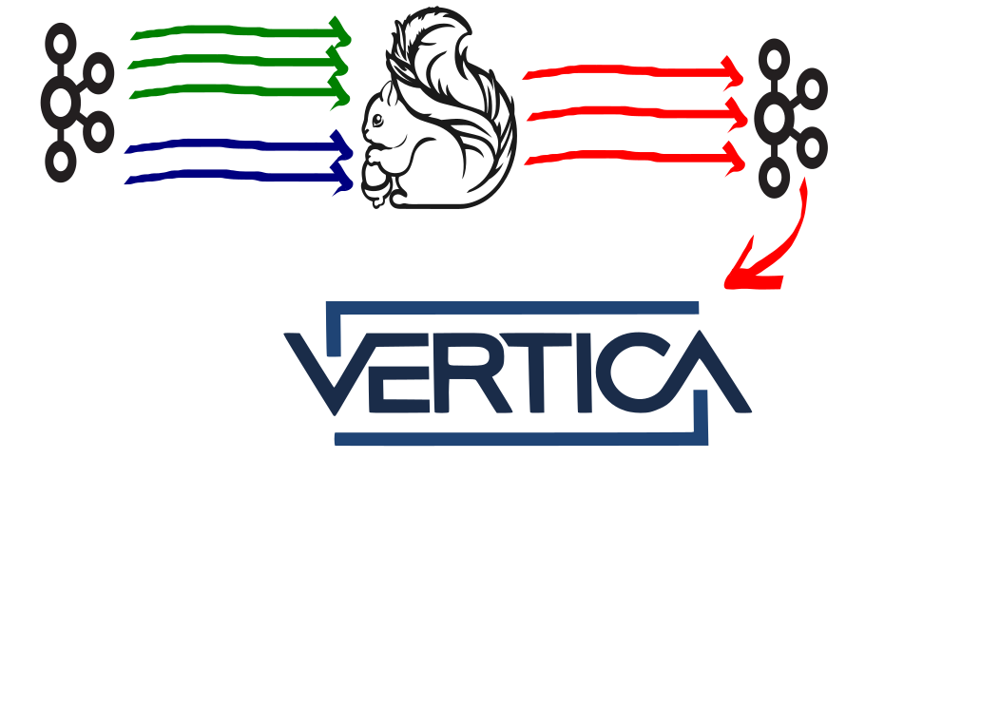

Dealing with Flink's Imperfections
Viaceslav Pozdniakov (Adform, Vilnius)
What I do
As Research Infrastructure Pod member:
- Run/support algorithms created by researchers
- Do data engineering
- Program (mainly) in Scala
On a Very High Level

After Data Is in Vertica
Modern online advertising
A publisher has a place on a web page where an ad can be shown.
Supply-side platforms organize an auction - they send bid requests.
Demand-side platforms ("bidders") reply to these bids requests with prices (not all requests are replied).
Some of those responses win - banners are shown (impressions).
Left Outer Join
| Impression | Initiated by bid |
|---|---|
| Impression 13213 | Bid 234343243 |
| Impression 13233 | NULL |
| Impression 132 | Bid 54325435 |
Order of Magnitude
Our demand-side platform (bidder) generates ~ x * 100 000 bid responses per second.
Some of them (~ y * 10 000 per second) initiate impressions.
Messages are ~ 1kB in size.
where x, y ∈ R, x ≥ 1, y ≥ 1Real Face of ELT
But Maybe It Scales?
Yes, it does...
... but Internet scales much faster
Stateful Stream Processing
Join kafka streams (impressions, bids) before putting it to Vertica. We tried:
- Storm, but we want types
- Kafka Streams, but we use Kafka 0.8
- Flink and it seamed to be OK.
What We Want to Get
Off-the-shelf Flink Streaming
dataStream.join(otherStream)
.where(0).equalTo(1)
.window(TumblingEventTimeWindows.of(Time.seconds(3)))
.apply (new JoinFunction () {...});
Perfect World
Real World
Perfect World's Math
- 30 000 impressions per second
- 300 000 bids per second
- 300 seconds window
- 1kB single message size
300 * (300 000 + 30 000) * 1kB = 99 GB
Principles
- Do not use wall clock
- Do not consume events from the future
- Keep state as small as possible
Practice
Checks and Balances
- Slow partition can slow down a whole system
- System can give up waiting for the slowest partition
- System's currentTime depends on data
- Distance between topics is fluctuating
Topology
What's Left of Flink
- Wateramarks, as periodic events
- Filter, map, flatMap, split, ...
- Two input operators
- Metrics
- Kafka sinks
- Modified Kafka consumer (stoppable, custom offsets)
Custom topology operators
- Event time saving
- Offset saving
- Throttling
- Cache
Things we learned
- Keep cache invalidation synchronous
- Caffeine Cache is faster then Guava Cache
- SandroGrzicic/ScalaBuff generated classes are bad to serialize, scalapb/ScalaPB are good
- Partial proto contracts (+ byte array) give paramount performace gain
- Protobufs are designed for "manual" assembly
Bad Flink
- Framework, not a library
- Topology deployment reminds J2EE times
- Docker unfriendly (we run Mesos Marathon)
- Wants to be persistent (checkpoints)
- Wants two-way network communication (Akka cluster)
- Almost doesn't lie about "exactly once" processing
- Checkpointing is slow (in our case)
- Has terrible type signatures (i.e. partition, checkpointing)
Good Flink
The way we process data is framework/library agnostic.
(Not very) unique Flink features we use:
- Partitioning (horisontal scale)
- Topology UI (for debugging)
Everything else available in libraries Monix, Akka Streams, FS2, ...